日文筆記~~~
{kind=link}
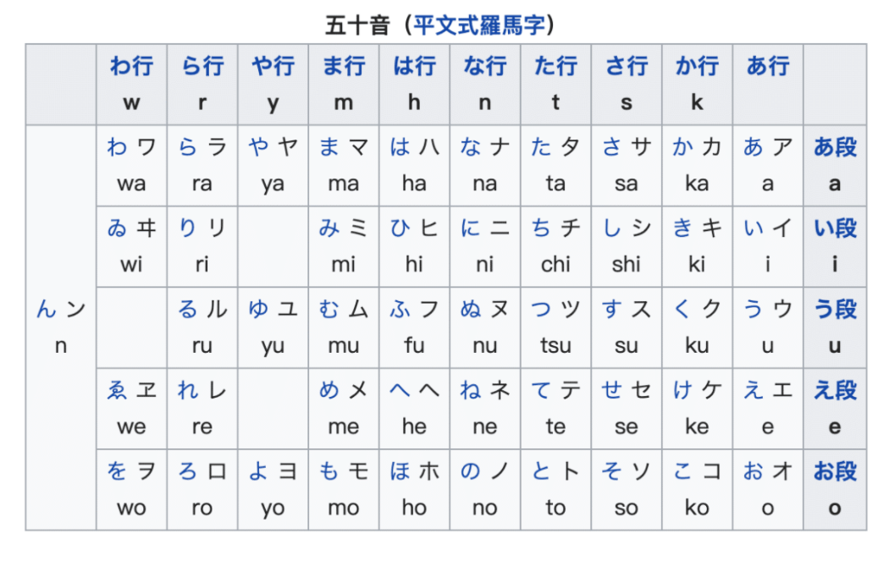
日文初級 #7｜動詞の分類、動詞の变形、動詞のます形
- 動詞的分類
第一類 : ます型的前面一個字的母音為ｉ
例如：休みます 書きます 使います
第二類 : ます型的前面一個字的母音為ｅ
例如：食べます 寝ます
第三類 : 来ます します
例如：勉強します 運動します
💡起きます 見ます 是第二類動詞 ！！！
- ます型 －＞ 禮貌、最常用的型態
{kind=link}
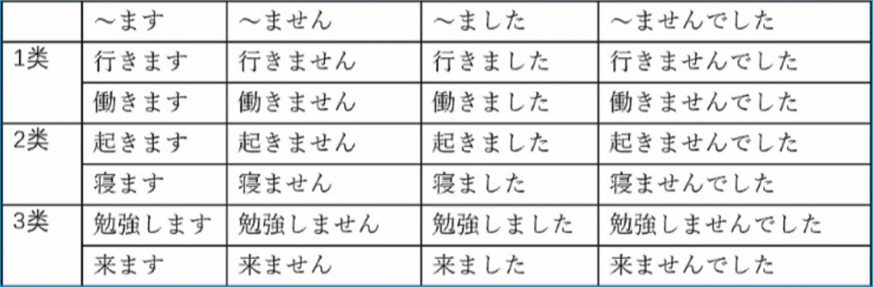
- 例句：
私は明日働きません // 我明天不上班
私は昨日働きました // 我昨天上班
森さんはー昨日働きませんでした // 森先生昨天沒上班
日語初級#12 ｜日語語法解釋 あげます／もらいます／くれます
{kind=link}
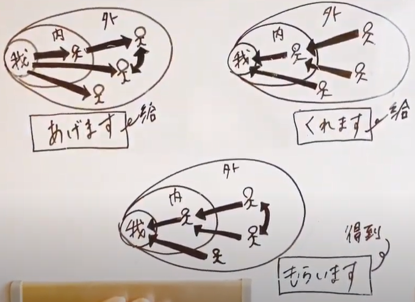
- ( 人1 ) は ( 人2 ) に ( 物 ) をあげます -＞ 人1 給 人2 物品
私は森さんにチョコレートをあげました。 // 我給森先生巧克力。
吉田さんは森さんに花をあげました。 // 吉田先生給森先生花。
母は森さんにケーキをあげました。 // 母親給森先生蛋糕。
- ( 人1 ) は ( 人2 ) に ( 物 ) をもらいます -＞ 人1 從 人2 拿到物品
私は吉田さんに写真をもらいました。 // 我從吉田先生那裏得到照片。
母は先生に本をもらいました。 // 母親從老師那裏得到一本書。
田中さんは森さんにプレゼントをもらいました。 // 田中先生從森女士那裏得到禮物。
- ( 人1 ) は ( 人2 ) に ( 物 ) をくれます -＞ 人2 從 人1 拿到物品
祖母は私にお年玉をくれました。 // 我從祖母那邊拿到壓歲錢。
昨日先生は娘に本をくれました。 // 昨天女兒從老師拿到書。
日語初級#13｜い形容詞的用法（否定形、過去形、＋名詞）
- (名詞) は (い形容詞) です
このスープは辛いです。 // 這個湯很辣。
そのカメラは高いです。 // 那台相機很貴。
北海道は寒いです。 // 北海道很冷。
あの女の子はとても可愛いです。 // 那個女孩子很可愛。
- い形容詞の否定型 💡い -＞ くないです く/ じゃ（では）ありません
この服は高くないです。 // 這件衣服不貴。
今日は寒くありません。 // 今天不冷。
抹茶は甘くありません。 // 抹茶不甜。
試験の結果はあまりよくありません。 // 考試的結果不太好。
- い形容詞の過去式💡肯定文的過去式 否定文的過去式 い -＞ かった くない -＞ くなかった くありません -＞ くありませんでした
旅行は楽しかったです。 // 旅行愉快。
昨日は暑かったです。 // 昨天很熱。
ホテルの部屋は広くありませんでした。 // 酒店的房間不寬敞。
サービスはよくなかったです。 // 服務不好。
- い形容詞 + 名詞
可愛い人 // 可愛的人
広い部屋 // 寬的房間
新しいパソコン // 新的電腦
近い場所 // 近的地方
いい人 // 好人
悪い人 // 壞人
日語初級#14｜な形容詞的用法（否定形、過去形、＋名詞）
- (名詞) は (な形容詞) です
この町は賑やかです。 // 這個城市很熱鬧。
富士山は有名です。 // 富士山很有名。
明日は暇です。 // 明天我有空。
この通りは静かです。 // 這條街很安靜。
- (な形容詞) の 否定型💡綺麗 -＞ 綺麗 ではありません ( 偏書面 ) じゃありません ( 偏口語 ) じゃないです ( 偏口語 )
この問題は簡単ではありません。 // 這問題不簡單。
森さんの部屋は綺麗じゃありません。 // 森先生的房間不乾淨/ 不整齊。
彼は有名じゃないです。 // 他不有名。
- (な形容詞) の 過去型💡肯定文的過去式 否定文的過去式 です -＞ でした ではありません -＞ ではありませんでした じゃありません -＞ じゃありませんでした じゃないです -＞ じゃなかったです
富士山は綺麗でした。 // 富士山很美。
渋谷は賑やかでした。 // 涉谷很熱鬧。
店員は親切ではありませんでした。 // 店員沒有熱情。
日本語は簡単でしたか。 // 日語很簡單嗎?
簡単じゃなかったです。 // 不簡單
- (な形容詞) + な + (名詞)
簡単なこと // 簡單的事
賑やかな町 // 熱鬧的城市
有名な人 // 有名的人
李さんは親切な人です。 // 李先生是個熱情的人
日語初級#20｜日語語法 動詞て形的変形規則
- 動詞て型變形規則
第一類動詞
{kind=link}
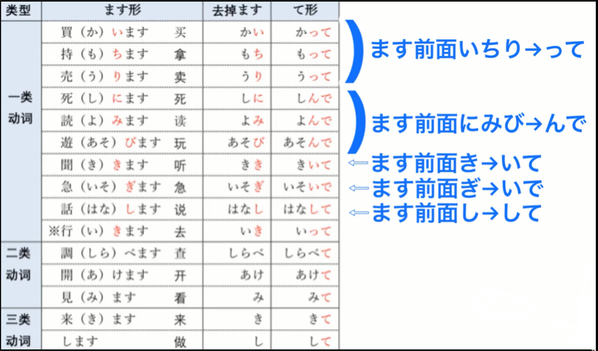
第二類、第三類動詞 : 動詞後面加て
- 使用て型的語法
- 動詞て形＋ください
見てください // 請看
聞いてください // 請聽
話してください // 請說
- 動詞て形＋動詞
昨日デパートへいって、買い物をしました。 // 昨天去百貨商場買東西了。
今日は家帰って、宿題をします。 // 今天我回家，(然後)做作業。
図書館へいって、、本を借りて、家へ帰ります。 // 去圖書館借書，(然後)回家。
日語初級#21｜日語語法 使用動詞て形的語法 (上)
- ( 動詞て型 ) + もいいです -＞ 表示許可時可使用
自宅で仕事をしてもいいです。 // 在自己家工作也可以。
試着してもいいですか。 // 可以試穿嗎?
写真を撮ってもいいですか。 // 可以拍照嗎?
いいですよ。 // 可以。
すみません、写真はちょっと.... // 不好意思，拍照有點.....
- ( 動詞て型 ) + はいけません -＞ 表示禁止時使用
写真を撮ってはいけません。 // 不可以拍照片。
ここでタバコを吸ってはいけません。 // 在這裡不可以抽菸。
庭の中に入ってはいけません。 // 不可以進庭院裡。
- ( 動詞て型 ) + います -＞表示動作或變化正在進行時使用
森さんは今本を読んでいます。 // 森女士現在正在看書。
前田さんはテレビを見ています。 // 前田先生正在看電視。
佐藤さんは今何をしていますか。 // 佐藤先生現在正在做什麼?
佐藤さんは今会議をしています。 // 佐藤先生線在正在開會。
日語初級#22｜日語語法 使用動詞て形的語法 (下)
- ( 動詞て型 ) + から -＞ 表示兩個以上的動作依照時間順序相繼發生時使用💡在一個句子內不能重複使用 ✕ ~てから、~てから、~てから～。 O ~てから、 第20課 動詞て形＋動詞 → 可以重複使用 O ～図書館へいって、、本を借りて、家へ帰ります。
朝ごはんを食べてから出かけます。 // 吃了早飯後出門。
王さんは毎晩ドラマを見てから寝ます。 // 小王每晚看了電視劇後睡覺。
家へ帰ってから、もう一度日本語の勉強をします。 // 回家後，在學一遍日語。
コンビニでおにぎりを買ってから、学校へ行きます。 // 在便利商店買完飯糰後去學校。
- ( 動詞て形 )＋あげます／もらいます／くれます
- 動詞て形 + あげます -＞ 讓對方受恩惠使用 (少用)
私は弟に日本語を教えてあげます。 // 我教弟弟日語。
- 動詞て形 + もらいます -＞ 行為接受者(受益方)為主語
私は先生に日本語を教えてもらいます。 // 我請老師教日語。
- 動詞て形 + くれます -＞ 行為的實施者為主語，說話人接受這行為感到恩惠
先生はわに日本語を教えてくれます。 // 老師教我日語。
- 動詞て形 + あげます -＞ 讓對方受恩惠使用 (少用)
日語初級#23｜表示離開/經過的を、表示附着点的に、表示移動行為的目的地的に
- 吉田さんは来月大学を卒業します。 // 吉田女士下個月大學畢業。
- このバスは駅前を通ります。 // 這輛巴士經過車站一帶。
- ここに座ってください。 // 請坐在這裡。
- かばんに財布をいれました。 // 把錢包放在包裡了。
日語初級#24｜表示願望時使用的～がほしい 以及～たい／たくない的用法，全面否定的表達方法
- ( 名詞 ) + が 欲しいです
新しい携帯電話が欲しいです。 // 我想要新的手機。
綺麗をスカートが欲しいです。 // 我想要漂亮的裙子。
何が欲しいですか。 // 你想要什麼 ?
豊田の車が欲しいです。 // 我想要豐田的汽車。
- ( 動詞 ) + たいです / たくないです -＞ 想要... / 不想要...
日本の映画を見たいです。 // 我想看日本的電影
オーストラリアへ行きたいです。 // 我想去澳大利亞。
父に会いたいです。 // 我想看父親。
友達と遊びたいです。 // 我想跟朋友一起玩。
3. 全面否定的表達意思
- [名詞] + を + 動詞 -＞ [疑問詞] + も + 否定型式
Q : 何をしたいですか。 // 你想做什麼?
A : 何もしたくありません。 // 什麼都不想做?
- [名詞] + に / から / と + [動詞] -＞ [疑問詞] + にも / からも / とも + 否定形式
誰にも会いたくないです。 // 誰也不想見。
誰とも協力しません。 // 跟誰都不合作。
- [名詞] + へ + [動詞] -＞ [疑問詞] + も / へも + 否定形式
Q : 週末どごへ行きたいですか。 // 周末你想去哪裡?
A : どこへも行きたくないです。 // 哪兒都不去。
日語初級#25｜主動幫忙時使用的 ましょうか、ませんか／ましょう／ましょうか的區別、〔疑問詞〕＋でも
- [動詞] ましょうか
荷物を持ちましょうか。 // 要不要幫你拿行李。
写真を撮りましょうか。 // 要不要幫你拍照片。
駅まで送りましょうか。 // 要不要幫你送到車站。
- ～ましょうか、～ましょう、～ませんか 的區別
- [動詞] ～ましょうか -＞ 主動幫忙時使用
荷物を持ちましょうか。 // 要不要幫你拿行李。
- [動詞] ～ましょう -＞ 表示提議時使用
少し休みましょう。 // 休息一下吧。
- [動詞] ～ませんか -＞ 表示提議時使用
少し休みませんか。 // 休息一下怎麼樣 ?
- [動詞] ～ましょうか -＞ 主動幫忙時使用
- [疑問句] + でも
何をたべたいですか。 // 你想吃什麼? (なに)
何でもいいです。 // 什麼都行。 (なん）
いつでも電話をしてください。 // 請你隨時打電話。
誰でもわかります。 // 誰都明白。
日語初級#26｜日語語法 い／な形容詞的て形、い／な形容詞和名詞並列時使用的語法
- [い形容詞]的並列
安くて美味しい料理が好きです。 // 我喜歡又便宜又好吃的菜。
あのホテルの部屋は広くて明るいです。 // 那家酒店的房間又寬敞又明亮。
安田さんは背が高くて、かっこいい人です。 // 安田先生是個子高，很帥的人。
- [な形容詞]的並列
綺麗で静かなマンションに住みたいです。 // 我想住又漂亮又安靜的公寓。
このパソコンの操作は簡単で便利です。 // 這台電腦用起來既簡單又方便。
複雑で長い試験問題。 // 又複雜又長的問題。
3. [名詞]的並列
この化粧品は資生堂の製品で、日本製です。 // 這個化妝品是資生堂的產品，是日本製造的。
伊藤さんは外資系企業の社員で、開発部の部長です。// 伊藤先生是外商職員，開發部的部長。
日語初級#27 | 動詞的ない形、使用ない形的三種語法
- ます -＞ ない
{kind=link}
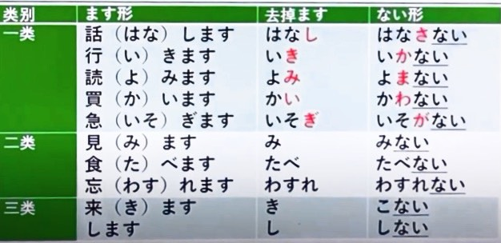
2. [動詞ない型] + でください -＞ 否定命令
忘れないでください。 // 請不要忘記。 (二類)
会議室に入らないでください。 // 請不要進入會議室。 (一類)
たばこを吸わないでください。 // 請不要抽菸。 (一類)
3. [動詞] ＋ なければなりません -＞ 表示必須
毎日薬を飲まなければなりません。 // 每天必須吃藥。
単語を覚えないといけませんか。 // 我得背單字嗎?
はい、覚えないといけません。 // 是的，你得背它。
4. [動詞] + なくてもいいです -＞ 表示不做某事也可以
今日は残業しなくてもいいです。 // 今天不加班也行。
飲み干さなくてもいいですよ。 // 不喝完也行。
学校へ行かなくてもいいですか。 // 不去學校也可以嗎?
いいですよ。でも、家で勉強をしなければなりません。 // 行啊。但你必須在家學習。
日語初級#28 | い／な形容詞和名詞的変化 ～なります／します
- [ い形容詞] + くなります -＞ 表示性質或狀態的變化💡安い -＞ 安くなります 暖かい -＞ 暖かくなります 大きい -＞ 大きくなります
暖かくなりました。 // 天氣轉暖了。
背が高くなりました。 // 長高了。
- [い形容詞] + くします -＞ 因主語的意志性動作或作用引起事物發生變化的時候使用💡高い -＞ 高くします 小さい -＞ 小さくします 冷たい -＞ 冷たくします
テレビに音を大きくします。 // 把電視的聲音開大一點。
安くしてください。 // 請便宜一點。
- [な形容詞] + になります -＞ 表示性質或狀態的變化💡簡単 -＞ 簡単になります 元気 -＞ 元気になります 綺麗 -＞ 綺麗になります
陳さんは綺麗になりました。 // 陳女士變漂亮了。
もう元気になりました。 // 我已經恢復健康了。
- [な形容詞] + にします -＞ 因主語的意志性動作或作用引起事物發生變化的時候使用
部屋を綺麗にします。 // 我把房間打掃乾淨。
静かにしてください。 // 請安靜。
5. [名詞] + になります -＞ 表示性質或狀態的變化
将来は医者になりたいです。 // 將來我想當醫生。
娘は今年三歳になりました。 // 女兒今年三歲了。
6. [名詞] + にします -＞ 因主語的意志性動作或作用引起事物發生變化的時候使用
来週から会議室を禁煙にします。 // 從下周起會議室實施禁菸。
私は蕎麦にします。王さんは？ // 我要點蕎麥麵。王先生呢? 私はうどんにします。 // 我要點烏冬面。
こちらの商品は、限定版です。 // 這個商品是限量版的。 じゃあ、これにします。 // 那麼，我要買這個。
日語初級#29 | 動詞的辭書形（基本形）＋使用辭書形的三種語法
- 動詞的辭書型 (基本型) → 辭典中使用的型式
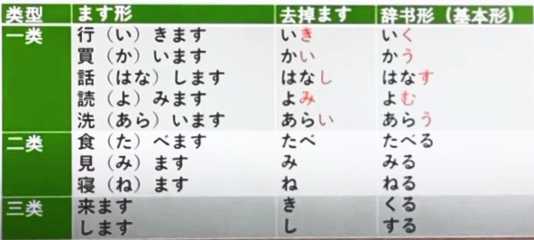
{kind=link}
- [動詞辭書型] + ことができます -＞ 會~~、能~~
彼はスペイン語を話すことができます。 // 他會講西班牙語嗎?
インド料理を作ることができます。 // 你會做印度菜嗎?
はい、できます。 // 是的，會做。
いいえ、できません。 // 不，不會做。
3. [名詞] + は + [動詞辭書型] + ことです
私の趣味はピアノを弾くことです。 // 我的愛好是彈鋼琴。
吉田さんの仕事はソフトウェアを開発することです。 // 吉田女士的工作是開發軟件。
張さんの夢は外国で働くことです。 // 張先生的夢想是在外國工作。
4. [動詞辭書型] + 前に
毎日寝る前にお風呂に入ります。 // 我每天睡前泡澡。
食事をする前に手を洗わなければなりません。 // 用餐之前必須洗手。
学校へ行く前にコンビニでパンを買いました。 // 去學校之前在便利商店買了麵包。
日語初級#30 | 動詞的た形變形規則以及用法
- 動詞的た型 (て-＞た)
{kind=link}
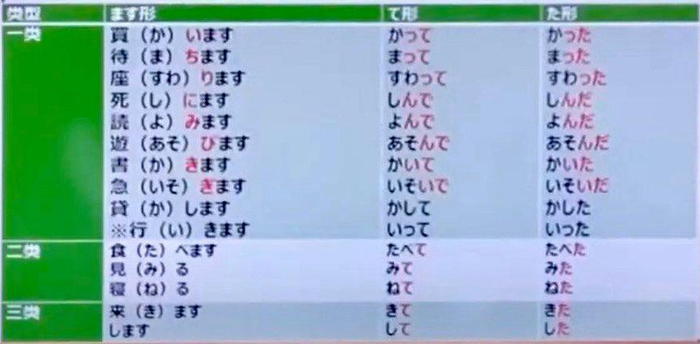
2. [動詞た型] + ことがあります / ありません
私はこの映画を見たことがあります。 // 我看過這部電影。
私は見たことがありません。 // 我沒看過。
劉さんは寿司を食べたことがあります。 // 劉女士吃過壽司嗎?
はい、あります。 // 是，吃過。
いいえ、ありません。 // 不，沒有。
日語初級#31 | 使用動詞た形的三種語法
- [動詞た型] + 後で -＞ 表示一個動作在另一個動作之後發生
毎日授業が終わった後で映画を見ます。 // 我每天下課後看電影。
映画を見た後で食事をしましょう。 // 看完電影後吃飯吧!
2. [動詞た型] + ほうがいいです -＞ 進行選擇時使用，建議對方做理想動作，句尾多加よ
忘れたほうがいいですよ。 // 你還是忘了比較好。
お酒を飲まないほうがいいですよ。 // 你最好別喝酒了。
毎日八時間寝たほうがいいですか。 // 每天睡八小時比較好嗎?
はい、そのほうがいいです。 // 是的，那樣比較好。
3. [動詞た型] + り + 動詞た型 + り -＞ 舉例有代表性的動作使用
毎週土曜日に、散歩したり買い物に行ったりします。 // 每周六，有時去散步，有時去買東西。
ゴールデンウイークには、家の掃除をしたり洗濯をしたりします。 // 黃金周的時候，打掃打掃房間，洗洗衣服。
日語初級#32 | 表示情况・狀態有多種可能性的語法～り～り、～によって
- ~り～り
結婚式のやり方は国によって違います。 // 結婚典禮的形式因國別而異
人によって考え方が違います。 // 人不同想法也不同。
安藤さんは毎日忙しですか。 // 安藤先生每天都很忙嗎?
いいえ、日によります。 // 不，要看是哪一天。
- [名詞] + によって -＞ 根據~ (不同)
日語初級#33 | は和が該怎麼區分
- 新訊息 or 舊訊息
豊田社長はどの方ですか。 // 豐田社長是哪位 ?
豊田社長はあの方です。 // 那位是豐田社長。
あの方が豊田社長です。 // 豐田社長是那位。
2. 判斷 or 敘述
子供が公園で遊んでいます。 // 孩子在公園玩。
それは私の傘です。 // 那是我的傘。
3. 一個人 or 幾個人
弟は家で勉強するとき、いつも音楽を流します。 // 我弟弟在家學習時，每次放音樂。
姉がドラマを見るとき、私も一緒に見ます。 // 我姐姐在看電視劇的時候，我也一起看。
4. 對比 or 排他
犬は好きですが、猫は嫌いです。 // 我喜歡狗，但不喜歡貓。
日本の本を読んだことがありますか。 // 有沒有看過日本的書?
日本の漫画は読んだことがあります。 // 我看過日本的漫畫 (但沒有看過其他日本的書)
店長を呼んでください！ // 請叫店長!
私は店長です。 // 我就是店長。
5. 正常 or 特殊
地球は丸い。 // 地球是圓的。
顔が赤いですよ。大丈夫ですか。 // 臉紅阿。沒問題嗎?
日語初級#34 | 簡体形（動詞、い/な形容詞、名詞）
- 動詞的簡體形
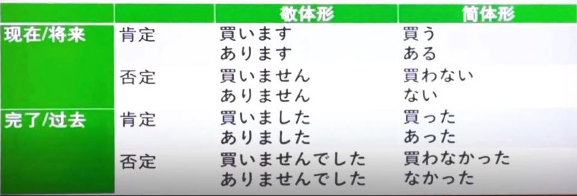
お土産、買った？ (買いましたか。)
うん、買った。(買いました)
ううん、買わなかった。（買いませんでした）
{kind=link}
- い形容詞的簡體型
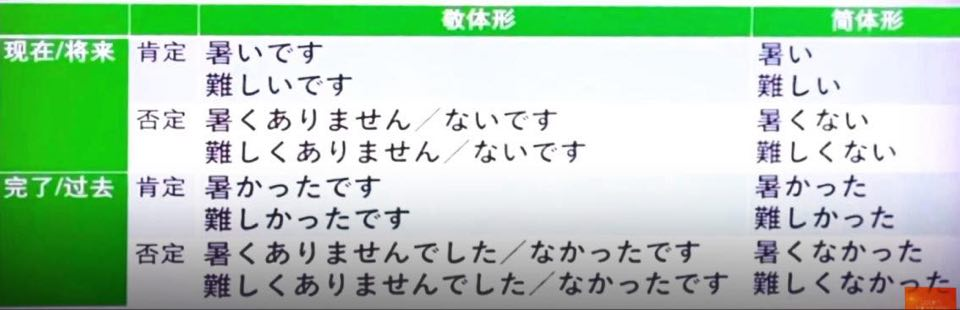
暑い？ (暑いですか。)
うん、暑い。（暑いです）
ううん、暑くない。（熱くありません。）
{kind=link}
- な形容詞的簡體形
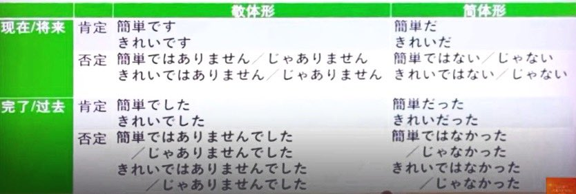
試験、簡単だった？（簡単でしたか。）
うん、簡単だった。（簡単でした。）
ううん、簡単じゃなかった。（簡単じゃありませんでした。）
{kind=link}
- 名詞的簡體形
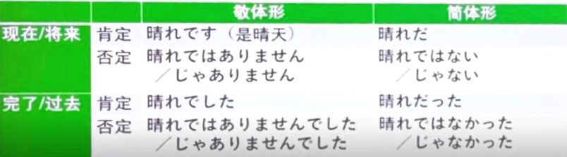
💡名詞的簡體形規則與な形容詞的規則是一樣的!!!
{kind=link}
日語初級#35 | 使用簡體形語法 小句＋かどうか、疑問詞小句＋か
- 小句 + かどうか
Q : この料理は辛いですか。 // 這道菜辣不辣 ?
A : 辛いですか。私は知りません。
-＞辛いかどうか知りません。 // 我不知道辣不辣。
部屋は清潔ですか。知りません。
-＞部屋が清潔かどうか知りません。 // 我想知道房間乾不乾淨。
今年の夏、九州へ行きますか。わかりません。
-＞今年に夏、九州へ行くかどうかわかりません。 // 我今年夏天去不去九州地區，還不知道。
- 疑問句小句 + か
Q : どの料理が辛いですか。 // 哪道菜辣 ?
A : どの料理が辛いですか。知りません。
-＞どの料理が辛いか知りません。 // 我不知道哪道菜辣 ?
Q : 今朝何を食べたましたか。 // 今早吃什麼了?
A : 何を食べましたか。忘れました。
-＞何を食べたか忘れました。 // 我忘記今天早上吃什麼了。
Q : 誰の部屋が一番きれいですか。 // 誰的房間最乾淨 ?
A : 誰の部屋が一番きれいですか。わかりません。
-＞誰の部屋が一番きれいかわかりません。 // 誰的房間最乾淨，我還不知道。
日語初級#36 | ～と思う、～と言う的用法
- 小句 + と思う -＞ 表示說話人的思考內容時使用。等於中文的「我想~」「我覺得」
先生はもうすぐ来ると思います。 // 我想老師馬上就來。
あの映画はとてもおもしろいと思います。 // 我覺得那部電影很有意思。
富士山はきれいだと思います。 // 我覺得富士山很美。
山下さんは美人だと思います。 // 覺得山下女士是個美女。
四川料理は辛いと思いますか。 // 我覺得四川菜辣嗎?
最初はとても辛いと思いました。 // 最初的時候，我覺得很辣。
でも、今は辛いと思いません。 // 但是現在我不覺得辣。
💡小句的最後部分 (と前面) = 簡體形
- 小句 + と言いました
兄は今日からダイエットを始めると言いました。 // 哥哥說從今天開始減肥。
太田さんは、今回の試験は簡単だったと言いました。 // 太田先生說這次的考試很簡單。
私は上司に残業したくないと言いました。 // 我跟上司說不想加班。
💡反覆說的話，用 ~と言っています 山下さんは新しいカメラが欲しいと言っています。
日語初級#37 | 自動詞vs他動詞 用法以及區别方法
- 用法~
ドアを閉めました。 // 關門了。
ドアが閉まりました。 // 門關了。
室温を下げます。 // 把室溫調下。
室温が下がります。 // 室溫下降。
髪を伸ばしたいです。 // 我想把頭髮留長。
髪が伸びました。 // 頭髮長了。
授業を始めます。 // 開始上課。
もう始まりましたか。 // 已經開始了嗎。
パソコンが壊れました。 // 電腦壞掉了
パソコンを壊しました。 // 我把電腦用壞了。
- 分別方法
對應關係 → ドアを閉める ドアが閉まる
沒有對應關係的自動詞 → 雨が降る 音が聞こえる
沒有對應關係的他動詞 → 本を読む 水を買う
同一 → 授業を再開する 授業が再開する
- 十大規則~
- 自動詞-eru → 他動詞-asu
水が出る // 水出來 水を出す // 放水
髪が濡れる // 頭髮溼 髪を濡らす // 把頭髮弄溼
- 自動詞-eru → 他動詞-yasu
体重か増える // 體重增加 体重を増やす // 增加體重
ビールが冷える // 啤酒很冰 ビールを冷やす // 把啤酒弄冰
- 自動詞-iru → 他動詞-osu
子供が起きる // 小孩起床 子供を起こす // 叫小孩起床
財布が落ちる // 錢包掉落 財布を落とす // 把錢包弄掉
- 自動詞-u → 他動詞-asu
服が乾く // 衣服乾 服を乾かす // 把衣服弄乾
足が動く // 腳在動 足を動かす // 動一下腳
- 自動詞-u → 他動詞-eru
店が開く // 店開了 店を開ける // 去開店
ビルが建つ // 大樓建好了 ビルを建てる // 建一棟大樓
- 自動詞-ru → 他動詞-su
学生が家に帰る // 學生回家 学生を家に帰す // 讓學生回家
食べ物が残る // 食物剩下 食べ物を残す // 把食物留下
- 自動詞-reru → 他動詞-su
服が汚れる // 衣服髒了 服を汚れす // 把衣服弄髒
パソコンが壊れる // 電腦壞掉 パソコンを壊れす // 把電腦用壞
- 自動詞-aru → 他動詞-eru
ドアが閉まる // 關門 ドアを閉める // 關門
仕事が見つかる // 找到工作 仕事を見つける // 去找工作
- 自動詞-eru → 他動詞-u
ボタンがとれる // 鈕扣掉了 ボタンをとる // 把鈕扣取下
石が砕ける // 石頭碎了 石を砕く // 把石頭敲碎
- 自動詞 → 他動詞
電気が消える // 燈關 電気を消す // 把燈關
連絡が入る // 有聯繫 連絡を入れる // 去聯繫
- 自動詞-eru → 他動詞-asu
日語初級#38｜表示轉折關係的が 、まだ〜、 何＋量詞+も
- まだ + 動詞 (否定)
何年英語を勉強しましたか。 // 你學了幾年英文?
3年勉強しました。 // 我學了三年。
でも、まだあまりできません // 但還是不太會。
夏休みにどこへいくか決めましたか。 // 暑假要去哪裡，你決定好了嗎?
まだ決めていません。 // 還沒決定。
- 小句が、小句 (轉折) -＞ 等於中文的 "可是"、"但是"，作為轉折用途
挑戦しましたが、失敗しました。 // 我挑戰了，但失敗了。
寿司は美味しいですが、ちょっと高いです。 // 壽司很好吃，但有點貴。
今日は日曜日ですが、会社へ行かなければなりません。 // 今天星期天，但我得去公司。
- 何 + 量詞 + も + 肯定形式
何回も失敗しました。 // 我失敗了好幾次。
この製品の開発は、何年もかかりました。 // 這個產品的開發花了好幾年。
昨日お酒を何杯も飲みましたが、酔いませんでした。 // 昨天我喝了好幾杯酒，但沒喝醉。
日語初級#39 | 口語中常用的語法～んです、どうして～んですか、小句が小句
- ~んです / のです💡⁂ んです 用於說明或解釋原因、理由 ⁂ んです 是口語形式 ⁂ のです 是書面形式 ⁂ 前面接簡體形
昨日は、学校へ行きませんでした。 // 昨天我沒去學校。
頭が痛かったんです。 // (因為)頭痛。
東京はタピオカミルクティーの店がたくさんありますね。 // 東京有很多珍珠奶茶店。
ええ、最近とても流行っているんです。 // 是，最近特別流行。
- どうして～んですか / なぜ～のですか💡⁂ 詢問理由的時候使用 ⁂ どうして～んですか 多用於口語 ⁂ なぜ～のですか 多用於書面語
どうして遅刻したんですか。 // 為什麼遲到了?
すみません、寝坊しました。 // 不好意思，我睡懶覺了。
どうして来週は仕事がないんですか。 // 為什麼下周沒有工作?
来週はお盆休みなんです。 // 下周是盂蘭盆節。 (名詞後面接)
なぜ私も残業しなければならないのですか。 // 為什麼我也要加班?
人手が足りないです。 // 人手不足。
- 小句が / けど、小句 (提示)💡⁂ 用於提示接下來要說的內容 ⁂ が 多用於書面 ⁂ けど 多用於口語
明後日から連休ですが、どうするか決めましたか。 // 從後天開始放小長假了，你想好了怎麼過嗎?
箱根へいきたいんですが、バスと電車どちらが安いですか。 // 我想去箱根，巴士和電車哪個更便宜?
木村さんを探しているんですけど、どこにいるか知っていますか。 // 我在找木村先生，你知道他在哪嗎?
この単語がわからないんだけど、李さんわかる？ // 我看不懂這個單字，李先生看得懂嗎?
(用於親密朋友或家人)
日語初級#40 | 表示状態的～ている／～てある，表示準備動作的～ておく
- 自動詞 + ています -＞ 表示結果狀態
電気が消えています。 // 燈關著。
壁に絵が掛かっています。 // 牆上掛者畫。
この目覚まし時計は壊れていませんよ。 // 這個鬧鐘沒有壞阿。
このパソコンを使ってもいいですか。 // 可不可以用這台電腦?
そのパソコンは壊れています。別のパソコンを使ってください。 // 那台電腦壞了。請用別的電腦。
どうしたんですか。 // 妳怎麼了?
パソコンのデータが消えています。どうしよう..... // 電腦的資料消失了。怎麼辦....
2. 他動詞 + てあります
換気のために、窓が開けてあります。 // 為了通風窗戶開著。
教科書に名前が書いてあります。 // 在課本上寫著名子。
資料はもうファイルに入れてあります。 // 資料已在文件裡放著。
3. 動詞ておきます -＞ 表示為做某種準備有意識的進行的動作
会議の前に資料を準備しておきます。 // 會議前把資料準備好。
来月までにこの本を読んでおいてください。 // 下個月之前請看好這本書。
先に帰りの切符を買っておいたほうがいいですよ。 // 最好事先買好回程的票喔。
10時から会議があるので、椅子はこのままにしておいてください。 // 從十點開會，請把椅子保持這個狀態。
使ったあとで、元の場所に戻しておいてください。 // 用完之後請放回原來的地方。
日語初級#41 | 小句（動詞簡體形/い形容詞/な形容詞/名詞）+名詞
- 小句 (動詞簡體形) + 名詞
これは明日会議で使う資料です。 // 這是明天會議要用到的資料。
祖母がくれた指輪をつけました。 // 我戴了祖母給我的戒指。
秋葉原で買ったカメラを友達に貸しました。 // 我把在秋葉原買的照相機借給朋友。
- 小句 (い/ま形容詞、名詞) + 名詞
家賃が安い部屋に住みたいです。 // 我想住租金便宜房間。
祖母は操作が簡単なスマホを買いました。 // 祖母買了操作簡單的智慧手機。
昨日日本語が専門の先生に会いました。 // 昨天認識了一位專門教日語的老師。
日語初級#42 | 小句的名詞化 1小句+のは+い/な形容詞、２小句+のを+動詞
- 小句 (動詞簡體形) のは + い/な形容詞
和食を作るのは楽しいです。 // 做日式料理是很愉快的。
日本語で文章を書くのは簡単です。 // 用日語寫文章很簡單。
自転車に二人での乗るのは危ないです。 // 兩個人騎自行車很危險。
佐々木さんは車を運転するのが大好きです。 // 佐々木女士特別喜歡開車。
私は絵を描くのが下手です。 // 我不擅長畫畫。
2. 小句 (動詞簡體形) のを動詞
課長に報告するのを忘れました。 // 我忘了向課長匯報。
林さんは王さんが英語を勉強するのを手伝います。 // 林女士幫王先生學習英文。
太田さんがどこにいるか知っていますか。 // 你知不知道太田女士在哪兒?
（彼女が）会議室にいるのを見ました。 // 我看見他在會議室。
先生に森さんが休むことを伝えました。 // 我對老師轉告了森先生請假的消息。
日語初級#43 | ～とき、～ながら、～ている
- 小句 + とき💡⁂ 表示時間的名詞短語 ⁂ 等於中文的「~時」
暇なとき、私はスマホで動画を見ます。 // 有空時，我用手機看影片。
寒いとき、こたつを使います。 // 天氣冷的時候，我用被爐。
大学生のとき、大きな地震がありました。 // 我大學的時候，發生過大地震。
タイに行くとき、お土産を買いました。 // 去泰國的時候買了禮物。
タイに行ったとき、空港でお土産を買いました。 // 去了泰國的時候在機場買了禮物。
💡接動詞的時候要注意 "時間" この本を読むとき。 → 要看這本書的時候 この本を読んでいるとき。 → 在看這本書的時候 この本を読んだとき。 → 看了這本書以後
- 動詞 ながら💡⁂ 同一主體同時進行兩個動作時使用 ⁂ 後面的動作是主要的動作
音楽を聴きながら寝ます。 // 一邊聽音樂一邊睡覺。
西田さんは昨日ビールを飲みながら映画を見ました。 // 西田女士昨晚邊喝啤酒邊看電視。
- 動詞 ています → 表示反覆或習慣性的動作
私は毎日日本語を勉強しています。 // 我每天學習日文。
福岡行きの飛行機は 3 時間に 1 便飛んでいます。 // 飛往福岡的飛機每小時飛一架。
李さんはアルバイトをしながら学校に通っています。 // 李先生邊打工邊上學